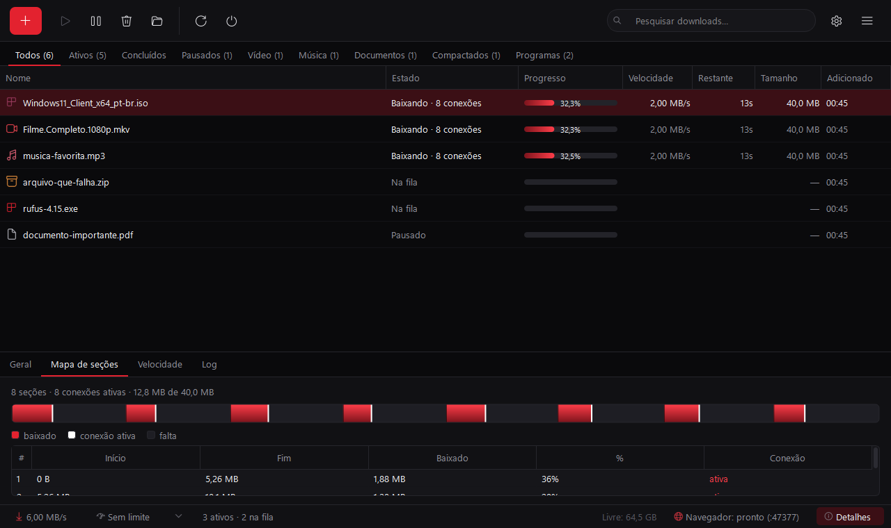
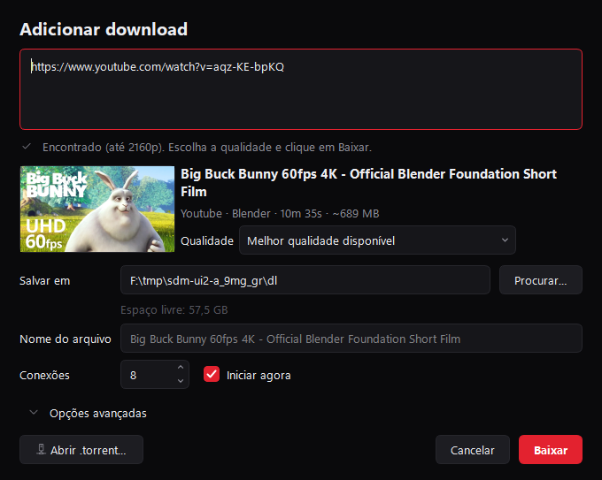
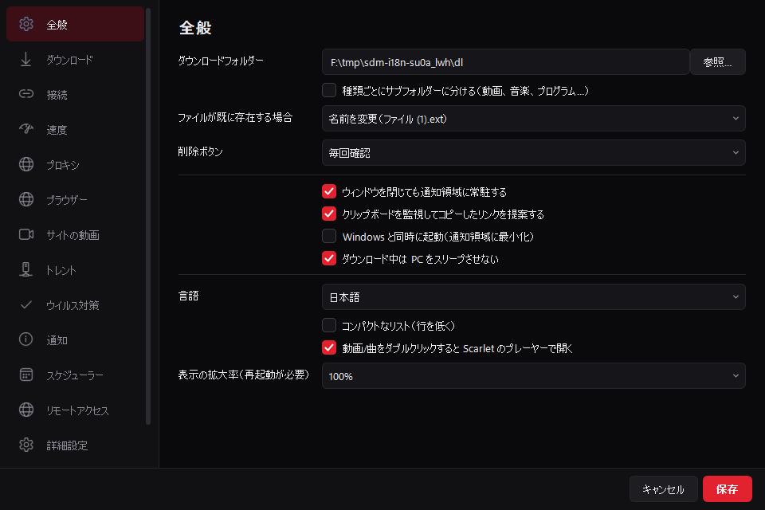

Seus downloads na velocidade máxima.
Até 32 conexões por arquivo, vídeos e músicas de mais de 1000 sites, torrents e extensão para qualquer navegador. Leve, sem anúncios — e o código é seu.

O que tem dentro.
Tudo que um gerenciador de downloads precisa, sem conta, sem anúncio e sem coleta de dados.
Velocidade máxima
Divide cada arquivo em partes e baixa com até 32 conexões. Se a internet cair, continua de onde parou.
Vídeos e músicas
YouTube, SoundCloud, Vimeo, Instagram, TikTok, X e +1000 sites. Até 4K, 30 ou 60 fps, ou MP3 até 320 kbps.
Torrents e magnet
Escolha os arquivos do torrent, limite o upload e pare de compartilhar quando quiser.
Qualquer navegador
Extensão para Chrome, Edge, Brave, Opera, Vivaldi e Firefox. Nos outros, é só copiar o link.
Player embutido
Assista ao que baixou sem sair do app: tela cheia, atalhos e prévia do tempo na barra.
Leve de verdade
Quase zero de CPU parado e poucos MB de RAM na bandeja. Roda até em PC antigo.
Agendador e limites
Baixe de madrugada, limite a velocidade com um clique e desligue o PC quando terminar.
Pelo celular
Acompanhe e adicione downloads pelo navegador do celular na mesma Wi-Fi, com senha.
11 idiomas
Português, English, Español, Français, Deutsch, Italiano, Русский, Türkçe, 中文, 日本語, 한국어.


Baixe o Scarlet DM.
Escolha o seu sistema. Os componentes de vídeo são baixados sozinhos na primeira vez que você precisar.
Windows
Windows 10 e 11 (64 bits). Atalhos, iniciar com o Windows e desinstalador.
Instalador para WindowsmacOS
macOS 11 ou mais novo. Arraste o app para a pasta Aplicativos.
Para Mac (Apple Silicon)Linux
AppImage: um arquivo só, roda em Ubuntu, Mint, Fedora, Debian, Arch e outras.
AppImage (x64)Versão 2.0.0.
Grátis em todos os sistemas. Confira os arquivos com as somas SHA-256.
ScarletDM-2.0.0-source.zip↓
Extensão — Chrome, Edge, Brave, OperaPacote para as lojas de extensões.scarlet-dm-chromium.zip↓
Extensão — FirefoxPacote para as lojas de extensões.scarlet-dm-firefox.zip↓
Somas SHA-256Para conferir cada download.SHA256SUMS.txt↓
Rode hoje.
Precisa do Python 3.10 ou mais novo. Funciona igual no Windows, macOS e Linux.
pip install -r requirements.txt python main.py
Perguntas frequentes.
O Windows mostrou “O Windows protegeu o computador”.
É o aviso padrão para programas novos com poucos downloads. Clique em “Mais informações” → “Executar assim mesmo”. Você pode conferir o arquivo com as somas SHA-256 desta página.
O Mac diz que o app não pode ser aberto.
Na primeira vez, clique com o botão direito no Scarlet DM em Aplicativos → “Abrir” → “Abrir”. Depois disso abre normal.
Como abro o AppImage no Linux?
Clique com o botão direito → Propriedades → “Permitir executar como programa”, ou no terminal: chmod +x ScarletDM-*.AppImage e dê dois cliques.
É grátis mesmo?
Sim. Sem anúncios, sem versão paga escondida e sem coleta de dados. O código é aberto (licença MIT).
Baixa do Spotify ou da Netflix?
Não. Esses serviços usam DRM (proteção contra cópia). YouTube, SoundCloud, Vimeo e +1000 sites funcionam. Baixe só o que você tem direito.
Baixe mais rápido.
Instale em um minuto. Sem conta, sem anúncio.
Baixar